Objective
This project explores flow matching, a way of training a generative model to move random noise into a target distribution by learning a velocity field. We focus on making that learned transport visible: training a small model on 2D point coordinates, watching how Gaussian noise is carried into a target shape, and investigating the relationship between the sampling path and its computational cost.
Part 1 trains a flow from scratch on a simple target (eight clusters on a circle) and compares the learned sampling trajectories with the straight paths used to build the training examples. Part 2 trains the same model on a creative target, an airplane silhouette, animates the learned transport, and studies how the number of sampling steps affects quality and cost. Everything runs on a CPU, and the model works only with 2D coordinates rather than images.
How Flow Matching Works
Learning a Velocity Field
Flow matching treats generation as transport over time. At time 0 a particle is a sample of Gaussian noise, and at time 1 it should be a sample of the data. A neural network learns a velocity field v(x, t) that says which direction and how fast a particle at position x should move at time t. To train it, a noise point x0 and a data point x1 are paired at random, a time t is drawn uniformly, and the model is asked to predict the velocity of the straight line between them at the point x_t = (1 - t) x0 + t x1.
loss = E || v_theta(x_t, t) - (x1 - x0) ||^2
Generating New Samples
At generation time, the model is never told where a particle should end up. A fresh noise point is simply moved along the learned field with small steps of forward Euler integration until it reaches t = 1. Each step requires one network evaluation, so the number of steps directly controls the sampling cost. Because the network learns the average velocity over many random pairings, the paths it produces at generation time do not have to be straight, even though every training path is.
Model Evaluation
I evaluate the models by comparing the distribution of generated points against independent samples from the intended target, rather than comparing individual points. The main quality check is a fixed-grid histogram total variation (TV) distance: both point clouds are binned on the same grid, with one extra bin for points that land outside the grid so no point is dropped, and the TV distance is half the sum of the absolute differences between the two histograms (0 means identical, 1 means no overlap). Since even two independent sets of target samples differ slightly, I also report this finite-sample floor as a reference.
For the sampling trade-off, I record the number of network evaluations, the sampling time without any plotting, and the TV distance at each step count. To measure how straight the learned paths are, I use the mean trajectory length minus the start-to-end distance, computed on a common grid of 1000 Euler steps, which is 0 for a perfectly straight path.
Environment and Settings
| Item | Value |
|---|---|
| Device | CPU only: AMD Ryzen 9 8940HX, 4 PyTorch threads |
| Packages | Python 3.11.15, PyTorch 2.12.0 (nightly), NumPy 1.23.5, Matplotlib 3.7.2, pandas, Pillow |
| Architecture | MLP, input (x, y, t), 3 hidden layers of width 128 with SiLU, 2D velocity output; 33,794 parameters |
| Training | Adam, learning rate 1e-3 with cosine decay to 1e-5, batch size 256; 20,000 steps (Part 1), 30,000 steps (Part 2) |
| Random seeds | 42 for weight initialization and training batches; fixed generator seeds for every evaluation sample |
| Measured training time | 26.6 s (Part 1), 45.5 s (Part 2) |
| Checkpoints | Both trained models are saved and reloaded, so changing plots or step counts does not require retraining |
Part 1: Learn a 2D Flow from Scratch
Task 1: Prepare the source, target, and training pairs.
The source distribution is a standard 2D Gaussian, N(0, I). For the target, I used a mixture of eight Gaussian clusters evenly spaced on a circle. Each target point picks one of the 8 clusters uniformly at random, where cluster k is centered at 3(cos(2πk/8), sin(2πk/8)), and then adds isotropic Gaussian noise with a standard deviation of 0.2. With the centers on a circle of radius 3, the target spans about [-3.6, 3.6] in each direction, which is a similar scale to the Gaussian source.
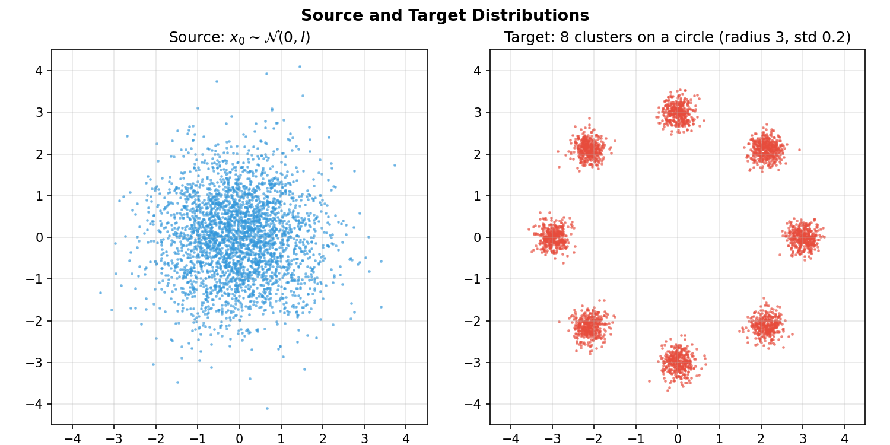
To build training examples, I paired each source point with an independently drawn target point, sampled a time uniformly between 0 and 1, and constructed the interpolated point and target velocity.
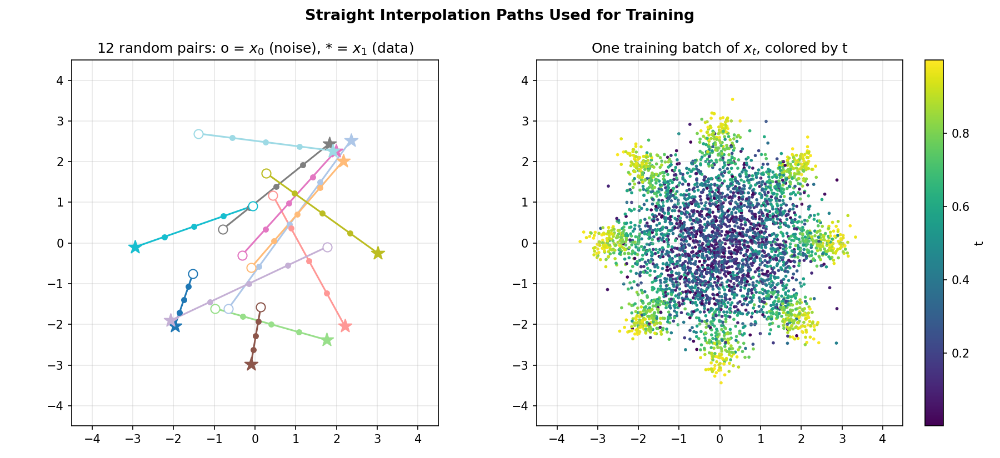
Discussion
Each training path is a straight line between a fixed noise point and a fixed data point. Taking the derivative of x_t = (1 - t) x0 + t x1 with respect to t gives x1 - x0, which does not depend on t, so a particle on one of these paths moves at the same velocity the entire time. A numerical finite-difference check confirmed this to within float rounding (about 1e-7) at t = 0.1, 0.5, and 0.9.
The right side of Figure 2 shows what the model actually sees during training: a cloud of points at random times, each labeled with its own pair's velocity. Points near t = 0 resemble the Gaussian source and points near t = 1 sit on the clusters. In between, many paths from different pairs cross through the same region, indicating that the same location can be labeled with very different velocities, which becomes important for the loss in Task 2.
Task 2: Implement and train the velocity model.
I implemented the velocity model as an MLP that takes the current point's two coordinates and the time as input and outputs a 2D velocity. It has three hidden layers of width 128 with SiLU activations, for a total of 33,794 parameters. I trained it with the flow-matching loss for 20,000 steps, drawing a fresh batch of 256 random pairs and times at every step, which took 26.6 seconds on the CPU.
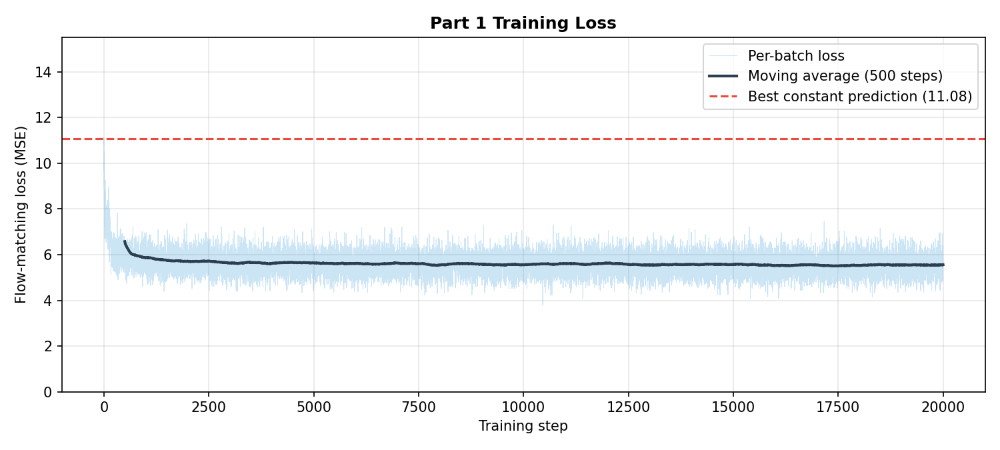
Discussion
The model predicts a velocity: given only the current position and time, it outputs the direction and speed that a particle should move. It never receives the target endpoint, so it cannot know which specific pair a training point came from. Because pairs are random, the same position and time can come from many different pairs with different velocities, and the best the model can do is predict the average of those velocities. The spread of the true velocities around that average cannot be learned away, so the loss has a floor above zero.
The loss curve is consistent with this. The loss falls quickly from the 11.08 of a constant prediction and levels off around 5.56 within the first couple thousand steps, after which the moving average barely changes. This suggests that the model has learned most of the predictable structure, and that the remaining loss mostly reflects the random pairing rather than a failure to train.
Task 3: Generate new points with the learned field.
I implemented forward Euler sampling and generated 3,000 new points from fresh Gaussian samples using 100 steps, without supplying any endpoints. I then visualized the point cloud at several times, the learned velocity field at selected times, and the learned trajectories next to the straight training paths.
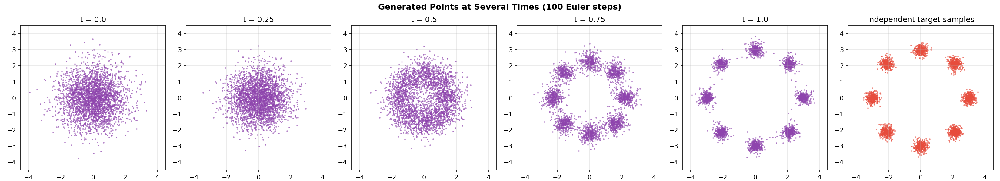
Discussion: Generated Points Over Time
Starting from fresh noise, the point cloud stays roughly Gaussian until about t = 0.25, opens into a ring by t = 0.5, and splits into eight separate clusters by t = 0.75. At t = 1, the generated points closely match the target, with a mean radius of 2.997 compared to 3.005. The histogram TV distance to independent target samples is 0.187, compared to a finite-sample floor of 0.136 between two independent target sets of the same size, so most of the remaining difference is sampling noise, along with a few stray points left between neighboring clusters.
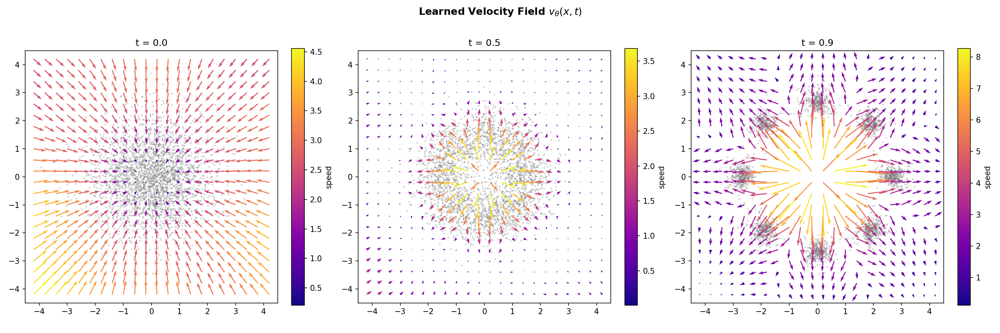
Discussion: Learned Velocity Field
At t = 0, the field points from every location toward the origin. This makes sense because at the start the model has no information about which cluster a point will reach, so its best prediction is the average target position minus the current position, which is approximately -x0 since the target is centered at the origin. By t = 0.5, the field pushes particles outward from the center into a ring. At t = 0.9, the field becomes sharp and fast, with speeds up to about 8: particles between clusters are pushed sideways toward the nearest cluster, while points already inside a cluster barely move. Since the field changes this much over time, the time input is essential to the model.
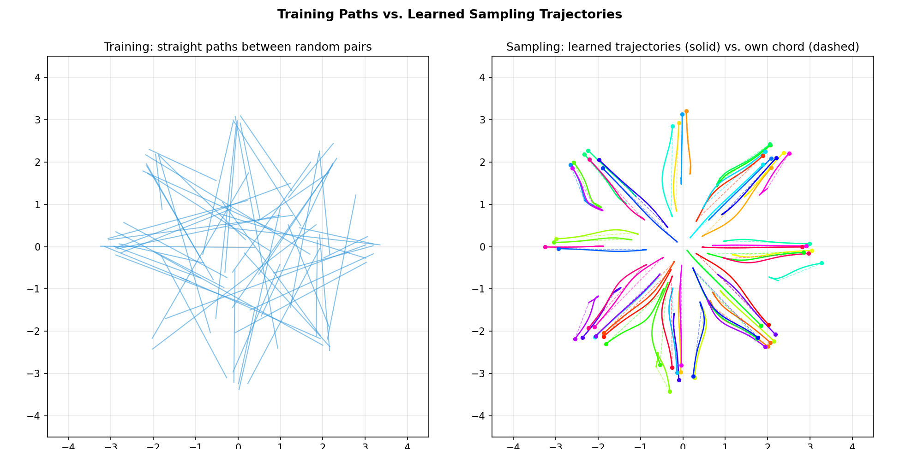
Discussion: Learned Trajectories vs. Straight Training Paths
The training paths are straight by construction and cross each other everywhere, since each noise point was paired with a random cluster. The learned sampling trajectories look very different. They do not cross, they are often curved or S-shaped (especially near the end, where particles bend into their nearest cluster), and they are much shorter. The straightness measure confirms this, with a mean length excess of 0.251 over the start-to-end distance.
Notably, the learned trajectories travel a mean straight-line distance of only 1.80, compared to 3.21 between random training pairs. The model does not reproduce the random pairing. Instead, averaging over all of the pairs produces a flow that sends each noise point to a nearby cluster. Ultimately, this is why straight training paths do not guarantee straight sampling trajectories: the network learns an averaged field, and following that field produces its own curved paths.
Part 2: Create and Analyze Your Own Animated Demo
Task 1: Choose a creative target.
For the creative target, I used the airplane symbol (Unicode U+2708) from the DejaVu Sans font, which is bundled with matplotlib. I rendered the glyph at font size 400 into a grayscale image and thresholded it into a binary foreground mask of 375 x 324 pixels, of which 21,721 (17.9%) are foreground. To draw a target point, a foreground pixel is chosen uniformly at random and a uniform random offset inside that pixel is added, so the distribution is continuous rather than sitting on a pixel grid. The mask is centered at the origin and scaled to 5.00 x 4.32 units, similar in scale to the Gaussian source.
Source and permissions: DejaVu fonts are free to use, modify, and redistribute under the Bitstream Vera / DejaVu font license. Only the rasterized shape of the glyph is used as a set of 2D locations, and no external image is involved.
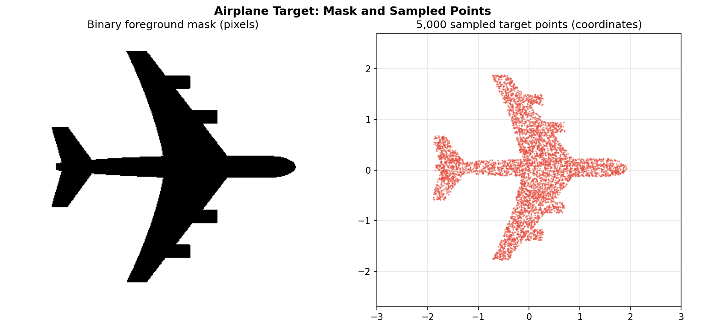
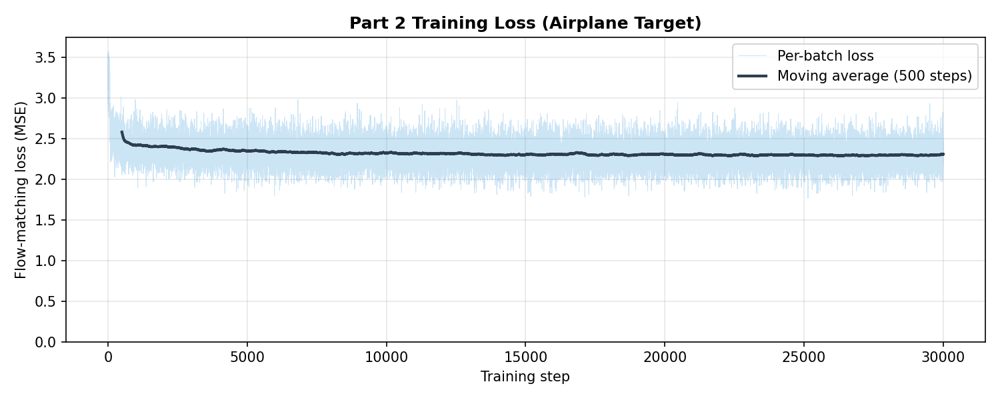
Discussion
The airplane is a harder target than the eight clusters. It is a single connected shape with sharp corners, a thin fuselage, swept wings, and four small rectangular engines, and its foreground covers only 17.9% of the mask, so the density is concentrated in narrow regions. I trained the same 3 x 128 MLP for 30,000 steps instead of 20,000, which took 45.5 seconds. The loss levels off at about 2.30, lower than in Part 1 because the airplane is smaller and closer to the origin than the cluster ring, so the training velocities are smaller overall.
Before settling on the airplane, I tried two other targets in quick preliminary tests that are not part of the final notebooks: the word "FLOW", which only produced a blurry rectangle, and a chess knight symbol, which came out as a rounded blob without its ears or mane. My best explanation is that the model blurs the target at a scale of roughly 0.2-0.3 units, so any detail smaller than that disappears, such as the narrow strokes and gaps between letters, the knight's fine features, and, as Task 3 shows, the airplane's small engines. The airplane works because its main parts (the fuselage, wings, and tail) are larger than that scale. This is a hypothesis based on which details survived rather than a measured resolution. In the same preliminary tests, a wider network (256 units) or a larger batch (1,024) only slightly sharpened the airplane while taking up to twice as long to train, so I kept the suggested architecture.
Task 2: Animate the learned transport.
I tracked the same 2,500 particles through a 100-step Euler trajectory and saved each step as a frame of a GIF animation (136 frames, holding the start and the final shape). Each particle's color comes from where it ends up: the hue is the angle of its generated endpoint around the center of the airplane, so the nose, tail, and each wing receive different colors. The color is assigned once after sampling and stays attached to the same particle in every frame. Colors are only a visualization attribute and do not participate in training, since the network only predicts coordinate velocities.
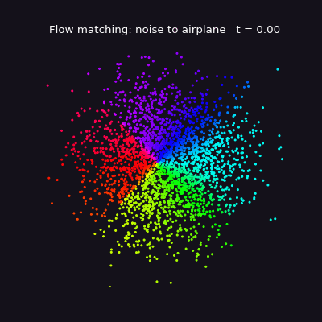
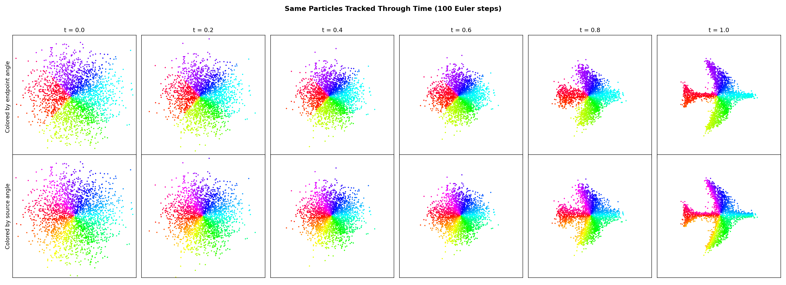
Discussion
With endpoint colors, the noise at t = 0 is already split into clean angular sectors, indicating that each particle's final location in the airplane is mostly decided by its starting direction from the center: points that start to the right become the nose, points to the left become the tail, and points above and below become the upper and lower wings. The source-angle colors show the same relationship from the other direction. Neighboring colors in the noise stay neighbors in the airplane, which suggests that the learned transport is smooth and does not tear regions of the noise apart or swap them.
Interestingly, most of the shape appears late in the trajectory. Up to about t = 0.6, the cloud mostly shrinks toward the center, and the wings, tail, and nose only separate between t = 0.6 and t = 1. This matches the sharp, fast velocity field near t = 1 observed in Part 1.
Task 3: Investigate the sampling trade-off.
With the trained weights and 20,000 starting Gaussian samples held fixed, I generated the airplane with 1, 2, 5, 10, 25, 50, and 100 Euler steps. The quality check uses a fixed histogram grid over [-3, 3] x [-2.7, 2.7] with 60 x 54 cells (0.1 units per cell) plus an outside bin. Besides comparing each result with independent target samples, I also compared it with a 1000-step sample from the same starting noise, which isolates the numerical error of Euler integration. Sampling time is the median of 5 runs with no plotting.
| Euler steps | Network evaluations | Sampling time (ms) | TV vs. target | TV vs. 1000-step | Outside grid |
|---|---|---|---|---|---|
| 1 | 1 | 10.8 | 0.977 | 0.979 | 0% |
| 2 | 2 | 23.7 | 0.585 | 0.585 | 0% |
| 5 | 5 | 56.5 | 0.337 | 0.297 | 0% |
| 10 | 10 | 89.3 | 0.225 | 0.157 | 0% |
| 25 | 25 | 238.7 | 0.185 | 0.086 | 0% |
| 50 | 50 | 506.4 | 0.180 | 0.056 | 0% |
| 100 | 100 | 832.3 | 0.178 | 0.035 | 0% |
For reference, the TV distance between two independent sets of target samples (the finite-sample floor) is 0.087, and the TV distance between the 1000-step sample and the target is 0.179.
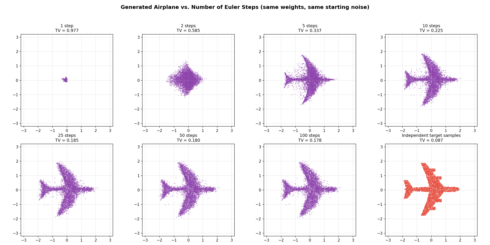
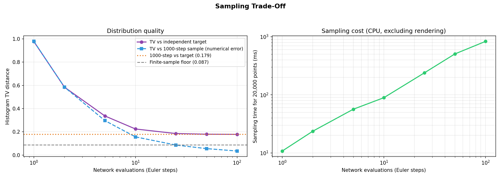
Discussion: What Changes with Fewer Steps
With only 1 step, every point collapses to a small blob near the origin (TV = 0.977). This happens because the learned velocity at t = 0 is approximately the average target position minus the current position, so a single full step sends every point to x0 + (E[x1] - x0) = E[x1], the mean of the target. With 2 steps, the points form a diamond-shaped blob (TV = 0.585), and by 5 steps the airplane is recognizable but surrounded by a spray of stray points (TV = 0.337). Quality keeps improving at 10 steps (0.225) and 25 steps (0.185), then levels off at about 0.18 for 50 and 100 steps. No points landed outside the histogram grid at any step count.
The cost grows roughly linearly with the number of network evaluations, from 10.8 ms for 1 step to 832 ms for 100 steps on 20,000 points (about 8-10 ms per step). Exact timings varied by about ±30% between runs on the same machine, but the linear trend was consistent. Going from 25 to 100 steps therefore costs about 3.5 times more time for almost no gain in quality.
Discussion: Numerical Error vs. Learned-Model Error
The reference curves show where the remaining error comes from. The TV distance to the 1000-step sample, which measures only the numerical error of Euler integration, keeps shrinking with more steps (0.157 at 10 steps, 0.086 at 25, and 0.035 at 100). However, the TV distance to the target levels off at the same value as the 1000-step sample itself (0.179), which is still well above the finite-sample floor of 0.087. This indicates that beyond about 25 steps, the error is no longer numerical. It comes from the learned field, which blurs the airplane's edges and misses fine details like the four engines, which never appear at any step count.
The target representation is a separate possible source of error, but this metric cannot measure it. Both the training data and the reference samples come from the same rasterized mask, so any difference between the mask and the true glyph outline is invisible to the TV distance. At font size 400, one pixel is about 0.013 units, much smaller than the 0.1-unit histogram cells, so this effect is likely small, but measuring it would require reference samples drawn from the glyph's vector outline instead of the mask. Ultimately, more sampling steps reduce numerical error, but they cannot fix an inaccurate learned field.
Conclusion
This project demonstrates how a small flow-matching model turns Gaussian noise into a target distribution by learning a velocity field, and how the learned transport differs from the straight paths used to train it. In Part 1, a 33,794-parameter MLP trained for 26.6 seconds on a CPU learned to move noise into eight clusters. Even though every training path is a straight line between random pairs, the learned field changes over time and produces curved, non-crossing trajectories that send each point to a nearby cluster, and the loss levels off above zero because the best possible prediction under random pairing is only the average velocity.
In Part 2, the same model learned a recognizable airplane silhouette in 45.5 seconds, and the animation showed a smooth transport in which neighboring regions of the noise end up in neighboring parts of the airplane. The step-count study showed that quality improves quickly up to about 25 Euler steps and then levels off at a TV distance of about 0.18, even as the numerical error keeps decreasing, because the remaining error comes from the learned field rather than the sampler.
Possibilities for further work could include one round of reflow, which retrains the model on its own noise-to-sample pairs to straighten the paths so that fewer steps are needed, or a model with more capacity or time embeddings to capture fine details like the airplane's engines.